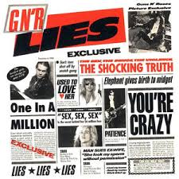

A história por trás de uma das maiores bandas da história do Hard Rock
O começo de tudo
Formada em Los Angeles, Califórnia em 1985, a banda surgiu da fusão de duas outras bandas pouco conhecidas: O Hollywood Rose, composto por Axl Rose e Izzy Stradlin (amigos de longa data) e o L.A Guns, formado por Tracii Guns, Ole Beich e Robbie Gardner. Provavelmente você conhecia apenas os membros do Hollywood Rose, não é mesmo? A formação original do que conhecemos como Guns N' Roses (aliás, esse nome surgiu surgiu dos líderes das duas bandas, ou seja, Axl Rose e Tracii Guns) veio a nascer um pouco depois. Apesar disso, essa formação não durou muito, devido a intrigas com Ole e Tracii, o que fez eles serem substítuidos rapidamente por Duff McKagan e Slash, já conhecidos de Axl. Posteriormente, Gardner também saiu da banda, sendo seu posto assumido pelo baterista Steven Adler (conhecido de Slash). Com essa série de acontecimentos, se formou a chamada formação clássica do Guns N' Roses, a qual se manteve até pouco antes das gravações para o terceiro e quarto lançamento de estúdio, o Use Your Illusion 1 e o seu irmão Use Your Illusion 2, lançados em 1991.
Primeiros passos
Já com a formação clássica consolidada, o primeiro show deles juntos foi feito no dia 6 de Junho de 1986, no Troubador, em Hollywood, local muito importante para a história da banda e onde eles voltaram a realizar shows outras vezes no futuro. Nesse mesmo ano, eles fizeram a primeira gravação de estúdio da banda, o EP ( podemos definir como sendo um estágio entre um single e um álbum devido a quantidade de faixas) Live ?!*@ Like a Suicide, lançado de forma independente pela banda em dezembro do mesmo ano. Esse EP continha dois covers (músicas gravadas originalmente por outras bandas) e duas inéditas, sendo elas respectivamente: Nice Boys (do Rose Tattoo), Mama Kin (do Aerosmith), Reckless Life e Move to the City. Interessante notar que as todas as músicas desse EP foram relançadas posteriormente no EP GN'R Lies. Porém, esse lançamento não fez muito sucesso como os próximos lançamentos, mas foi suficiente para chamar a atenção da gravadora Geffen Records, que assinou com a banda no mesmo ano. Mesmo com esse contrato, a vida da banda não foi fácil, já que a busca de um produtor para o álbum foi extensa e demorada, tendo sido testado até mesmo Paul Stanley, o vocalista da lendária banda Kiss, mas a parceira não foi para frente. Foi aí que entrou Mike Clink, produtor que assumiu a missão de produzir o primeiro grande lançamento do Guns N' Roses: Appetite for Destruction.
O álbum que definiu o Guns: Appetite for Destruction
Pelos meados dos anos de 1986 e 87, o Guns estava preparando o lançamento do Appetite, mas esse período, como quase todos dessa banda, sempre esteve envolto por polêmicas e confusões. Todos os membros da banda tinham um certo grau de problemas com bebidas e mulheres, sendo os mais afetados o Slash e o Steven. Nessa época, eles já eram conhecidos pela cidade pelos seus shows explosivos e suas polêmicas, ganhando um apelido que acompanharia a banda por muito tempo: a banda mais perigosa do mundo. Com todo esse caos em volta, o sucesso do álbum em produção definiria o futuro da banda. Provavelmente, se o Appetite fosse mal, a Geffen não iria manter contrato com o Guns, justamente pelos comportamentos explosivos da banda, em especial do frontman Axl Rose. Apesar de tudo isso, o talento da banda era inegável, com a crescente de público a cada show, no dia 21 de Julho de 1987, o Appetite for Destruction finalmente é lançado, composto de 12 faixas originais. Mesmo assim, o álbum inicialmente não foi um sucesso de cara o que preocupou muito a banda e a gravadora num primeiro momento. Os dois primeiros singles lançados foram Welcome to the Jungle e It's So Easy, ficando na posição 182 da Billboard 200 (revista referência global no âmbito musical). Dessa forma, a Geffen pressionou a MTV a passar o clipe de Welcome To The Jungle (o clipe e a letra não eram considerados apropriados para passar na programação diária da emissora). Por causa disso e pela qualidade da música, o vídeo se tornou o mais pedido da emissora pelos telespectadores, o que finalmente alavancou as vendas e o sucesso do álbum, ganhando, em abril de 1988, o disco de platina nos EUA. Agora, a Geffen e a banda queriam expandir o seu sucesso, e a escolhida para elevar ao topo das paradas não podia ser outra: Sweet Child O' Mine.
A música que alavancou o Guns: Sweet Child O' Mine
A história por trás dessa música e o seu sucesso mereciam apenas um artigo a parte. Escrita por Axl Rose, a música foi feita para a sua namorada na época, Erin Everly. O processo de composição musical da música foi ocorrendo naturalmente, como boa parte das músicas da banda. Os solos de guitarras foram feitos pelo Slash em um momento de prática que surgiu o icônico riff dos anos 80. Apesar disso, Slash não era muito com a cara da música, pois considerava ele uma balada meio batida, o que não é do gosto dele, preferindo rocks mais elétricos e impulsos como Welcome To The Jungle, It's So Easy e entre outras. Porém, como Axl gostava muito dela junto com outros membros, ele acabou colaborando para a criação desse clássico. Outro fato curioso da criação dessa música era que Axl não sabia como terminar a música, e certa demo da música, ele ficou repetindo e se perguntado: " Where do you go now" (Para onde vamos agora?). Por fim, esse momento de dúvida e incerteza se tornou a finalização perfeita para uma música que marcou gerações. Desse modo, com o lançamento da música em formato de single, o sucesso foi imediato, com o videoclipe sendo um dos mais pedidos da MTV, mostrando os membros da banda e suas respectivas namoradas. Esse monstruoso single levou a banda para as paradas da Billboard, sendo até hoje a música mais conhecida e lembrada quando falamos de Guns N'Roses. Por fim, ela também foi responsável por alavancar outras músicas, como o single de Paradise City e o álbum Appetite For Destruction contabilizou mais de 30 milhões de cópias em todo o mundo, sendo por muitos anos o disco de estreia mais vendido da história.
Consolidação do Sucesso: GN'R Lies
No ano seguinte ao lançamento do Appetite, o Guns já preparava o lançamento de mais um material de estúdio que iria consolidar o nome da banda: GN'R Lies. Como já citado, o material contava com 4 músicas do primeiro EP e também contou com 4 inéditas, sendo elas: Patience, One in a Million, I Used To Love Her e You're Crazy (importante citar que essa música estava presente no Appetite, mas sendo uma versão mais elétrica e rock n' roll, enquanto aqui ela se apresenta com mais ênfase na parte acústica). Apesar de não ter batido o sucesso do seu antecessor (uma tarefa quase impossível!), o EP vendeu bem, e a música Patience fez muito sucesso na época, alcançando o topo das paradas e efetivando o sucesso da banda mais perigosa do mundo. Entretanto, não só de felicidades e elogios foi o recebimento desse EP. A música One in a Million foi muito criticada na época, sendo acusada de conter trechos racistas, homofóbicos e xenofobicos, em passagens como "Police and niggers, that's right" e "Immigrants and faggots, they make no sense to me". A música é tão polêmica que no álbum de comemoração aos 30 anos do Appetite For Destruction, que continha faixas do Appetite e do Lies, essa música foi excluída. Mesmo com diversas polêmicas, a banda ainda manteve uma alta popularidade que não parava de crescer, com seus shows enchendo estádios ao redor dos Estados Unidos. Com isso, os anos 90 vinham, e o Guns não ficaria parado. Uma nova era estava indo, com o lançamento ousado do álbum duplo Use Your Illusion.

Últimos Brilhos no Meio do Colapso Evidente: Use Your Illusion
O sucesso da banda estava enorme no final dos anos 80, e a expectativa para os próximos lançamentos do Guns era enorme. Porém, nos bastidores, o clima da banda estava piorando a cada dia mais. Os problemas de sexo, drogas e principalmente ego inflado (Axl que o diga) tornaram a relação cada vez pior, e a primeira das perdas veio logo no começo das gravações do Use Your Illusion: Steven Adler. No caso do Steven, a continuidade dele era algo inviável, já que seu problema com heroína o incapacitava de tocar as músicas. O último momento que tivermos a formação clássica tocando juntos foi em 1990, no festival Farm Aid, onde já era visível as tensões na banda e o claro despreparo de Adler. No meio desse caos, o Guns tocou uma música inédita: Civil War.. Essa e mais outras 29 músicas estariam presentes no lançamento duplo dos Use Your Illusion I e II em 17 de setembro de 1991. Vale ressaltar que uma parte dessas músicas desse super lançamento já haviam sido escritas há alguns anos, desde antes da época do Appetite. Na época, Axl não quis incluir baladas como November Rain e Don't Cry para aparentemente não suavizar a imagem do Guns. Relatos de membros como o Slash afirmam que todos ajudaram na composição das músicas, seja na letra ou na parte instrumental. Lembra que o Guns tinha ficado sem baterista? Então, pouco tempo depois da demissão de Adler, o Guns conseguiu encontrar o baterista do The Cult, Matt Sorum, que logo se encaixou com o ritmo da banda. O lançamento do álbum duplo com uma tonelada de material inédito ferveu o mundo da música, e os dois álbuns em poucos dias alcançaram as duas primeiras posições da Billboard, sendo um sucesso imediato.